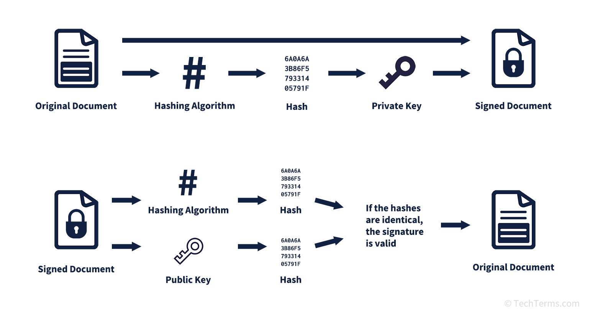
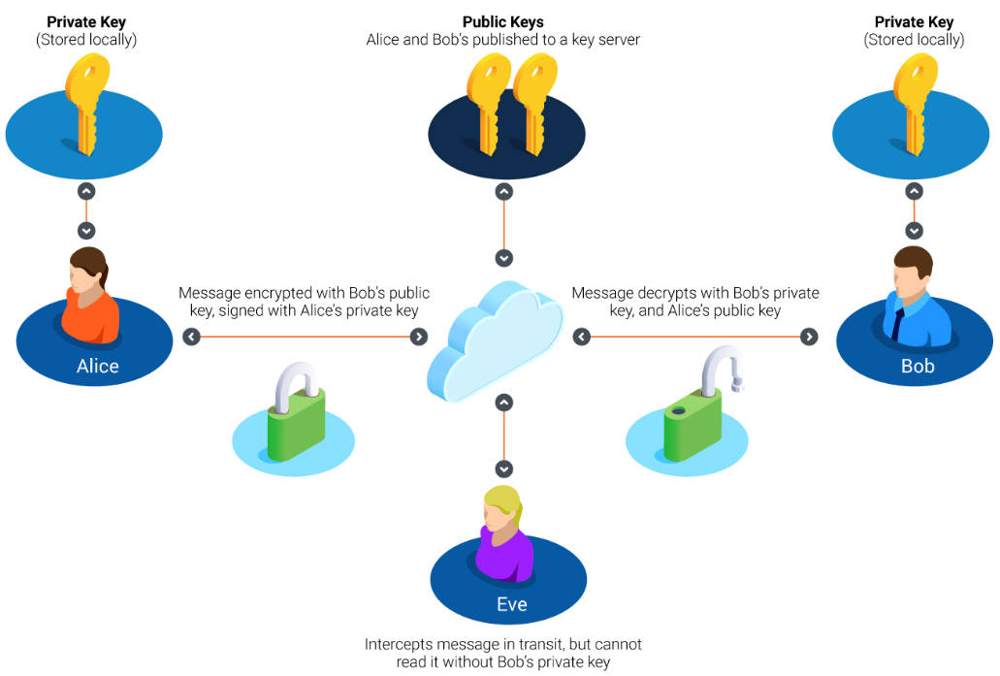

主体鉴别 Authentication：信息是 Alice 发出的
消息鉴别 Integrity：消息没有被篡改
不可否认 Non-repudiation：防抵赖；第三方举证
公钥通常预先分发或通过证书获取，不需要每次发送
若 Bob 已知 Alice 的公钥（如通过 CA 证书），则无需重复发送
证书可以由 Alice 发送或向 PKI 申请
若验证成功，得到一个哈希值 - 摘要1
否则不是用户 Alice 发送的消息 - 主体鉴别
如果相等，则能确定消息未被篡改 - 消息鉴别
否则消息被篡改

Alice 使用 Bob 的公钥对消息进行加密 → 确保只有 Bob 能解密
Alice 使用自己的私钥对消息进行签名 → 确保消息来自 Alice，且未被篡改
Bob 使用自己的私钥解密消息
Bob 使用 Alice 的公钥验证签名，确认消息来源和完整性

A digital signature is a specific type of electronic signature that serves as a virtual “fingerprint” used to authenticate the identity of the signer and the digital document they sign.
Digital signature is one of the electronic signature technologies, and it is also the most mature and widely used electronic signature technology in the world. A digital signature is a digital string, it can only be created by the sender of information and can not be forged by others. It is equivalent to a digital fingerprint. And this digital string is also significant proof of the authenticity of the information of the sender.
Digital signatures have many advantages. It can save time, reduce cost, and speed up work efficiency; It also has strong security and legal benefits. Nowadays, it is widely used in business, finance, and other fields.